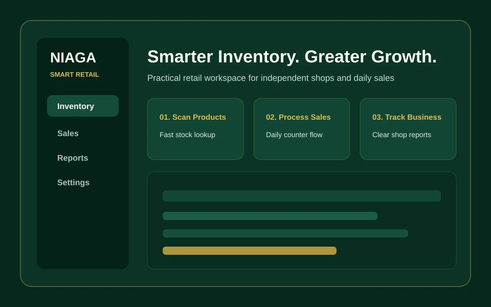

TGPU Legacy
المقر الرئيسي لمؤسسة Tok Guru Pulau Ubi Legacy في ماليزيا، المشرف على حوكمة العلامة التجارية والشراكات الاستراتيجية.
تُعدّ TGPU Legacy المقر المؤسسي الماليزي لإرث توك غورو بولاو أوبي، حيث تربط جنوب شرق آسيا بدول مجلس التعاون الخليجي عبر الاستشارات التجارية العابرة للحدود، والمنتجات الرقمية العملية، والابتكار التقني المنضبط.


عن TGPU Legacy
يرمز اسم TGPU إلى توك غورو بولاو أوبي، تخليداً لإرث العلم وخدمة المجتمع لجد المؤسس محمد ممدوح صافين رحمه الله في تومبات بولاية كلنتن. واليوم تعمل TGPU Legacy من ماليزيا بصفتها مؤسسة مسجلة تطوّر حلولاً تقنية مسؤولة ومسارات تجارية بين المناطق.
وبدلاً من الاقتصار على واجهة استشارية فردية، تشكّل TGPU Legacy المظلة المؤسسية التي تجمع بين استشارات دخول الأسواق، والمبادرات التعليمية العامة، والمنصات البرمجية المتخصصة وفق حوكمة واضحة.
المنظومة المؤسسية
يخدم كل نطاق شريحة محددة بوضوح، مع الفصل التام بين الموارد التعليمية المجانية، والخدمات الاستشارية التجارية، وبيئات العمل الداخلية، وأدلة البرمجيات.
المقر الرئيسي لمؤسسة Tok Guru Pulau Ubi Legacy في ماليزيا، المشرف على حوكمة العلامة التجارية والشراكات الاستراتيجية.
خدمات استشارية مستقلة بين ماليزيا ودول الخليج لدخول السوق السعودي والخليجي، وتأهيل الموزعين، والتوريد والتصنيع OEM/ODM من ماليزيا.
بيئة تشغيل داخلية محمية لتطبيقات المنظومة الرقمية، مقترنة بدليل التطبيقات العام.
ذراع الهندسة التقنية ودليل التطبيقات العام الذي يطوّر حلولاً عملية في التجارة والتعليم والسفر وإدارة المجتمعات.
بوابة تعريفية تجمع GCC Connect وMatchOS وHealthcare وTEMAN Haramain وOptic وBakes. (النطاق os.tgpu.tech غير موجّه للعامة حالياً.)
مساحة عمل محمية لتنسيق المعاملات التجارية بين ماليزيا والخليج وإدارة طلبات الشركاء.
مورد معرفي مجاني يعتمد على المصادر الرسمية لمساعدة الشركات الماليزية على دراسة جاهزية دخول السوق السعودي والخليجي.
دخول أسواق الخليج والركائز الثلاث
نجمع بين إتقان اللغة العربية والخبرة بسلاسل التوريد الماليزية والتنفيذ المنهجي عبر جنوب شرق آسيا ودول الخليج.
أبحاث أسواق منظمة، وتأهيل المشترين والموزعين، وتنسيق التوريد والتصنيع OEM/ODM من ماليزيا إلى الرياض ودول مجلس التعاون.
منصات برمجية متخصصة تغطي عمليات التجزئة، وعيادات البصريات، والمخابز، وسير العمل الصحي، وإدارة الأحياء السكنية.
منصات تعليمية متعددة اللغات وشراكات مؤسسية مبنية على الدليل والوضوح دون أي ادعاءات مبالغ فيها.
محفظة المنتجات الرقمية
صفّ المنصات حسب القطاع واطّلع على الحالة التشغيلية والرابط المباشر ومرحلة الإطلاق الفعلية دون أرقام مختلقة.

مسار مُدار لتأهيل الشركاء واستقبال الفرص التجارية التي تربط الشركات في جنوب شرق آسيا بنظرائها في دول الخليج.

منصة منظمة لمطابقة الفرص التجارية للموزعين والمشترين والتوريد والتصنيع OEM/ODM بين ماليزيا والخليج.

رفيق سفر للحج والعمرة يعمل دون اتصال بالإنترنت وملائم لكبار السن باللغات الملايوية والعربية والإنجليزية.
عرض تجريبي لبرمجيات متاجر البصريات متعدد اللغات يشمل كتالوج المنتجات ومواصفات العدسات وحجز المواعيد.

مساحة عمل عملية لإدارة المخزون والمبيعات اليومية والتقارير لمتاجر التجزئة والبقالة المستقلة.

عرض تفاعلي لمتجر مخابز يضم كتالوج منتجات وسلة مشتريات ومسار استقبال طلبات الكيك المخصص.

عرض تجريبي لإدارة الأحياء السكنية وتنسيق إعلانات السكان والتواصل المجتمعي والمرافق المشتركة.

معاينة تشغيلية للعيادات توضح استقبال المراجعين وتسجيل الوصول وتسليم مهام الرعاية ببيانات تجريبية.

حزمة أدوات محلية للأعمال الصغيرة تجمع الملاحظات وحساب الأسعار والفواتير والتصميم الترويجي السريع.
التقنية والابتكار
تعتمد مختبرات TGPU Innovator Labs بنية تقنية خفيفة عالية الأداء تدعم العمل دون اتصال والتكافؤ الكامل بين العربية والإنجليزية والملايوية.
تُبنى المنصات والمواقع المؤسسية على بنية سحابية خفيفة ومستدامة تضمن سرعة الاستجابة دون تكاليف تشغيلية غير مبررة.
صُممت المنصات الرئيسية لتدعم الإنجليزية والملايوية والعربية بتخطيط كامل من اليمين إلى اليسار وخط Noto Kufi Arabic.
تطبيقات مثل TEMAN Haramain وSATU تبقى قابلة للاستخدام حتى عند ضعف الشبكة أو أثناء السفر.
تُصمم الأدوات المعززة بالذكاء الاصطناعي مثل Muthabbit مع إبراز المصادر والضوابط التحريرية والإشراف البشري.


المؤسس والقيادة
المؤسس · TGPU Legacy وTGPU Gulf Advisory والمنظومة الرقمية
يقود محمد ممدوح صافين مؤسسة TGPU Legacy من ماليزيا، جامعاً بين دراساته العليا في الدراسات العربية بالجامعة الإسلامية العالمية بماليزيا (IIUM) وهندسة المنتجات الرقمية والتنسيق التجاري بين ماليزيا والخليج.
وانطلاقاً من معرفة مباشرة بثقافة الأعمال في المملكة العربية السعودية ودول الخليج وبيئة الشركات الصغيرة والتعليم في ماليزيا، يشرف على استشارات دخول الأسواق في TGPU Gulf Advisory والمنصات الرقمية في TGPU Digital Ecosystem.
الشراكات الاستراتيجية وعلاقات المستثمرين
نتعاون بانتقائية مع المصدرين والموزعين الإقليميين والمؤسسات التعليمية وشركاء التقنية الذين يقدّرون الحوكمة الشفافة.
تحديد الهدف التجاري أو جاهزية المنتج أو المسار التقني عبر ماليزيا وجنوب شرق آسيا ودول الخليج.
مراجعة المتطلبات التنظيمية واللغوية وملاءمة السوق عبر المصادر الرسمية قبل الالتزام برأس المال.
التنفيذ وفق نطاق واضح ومراحل محددة ومسؤولية تشغيلية شفافة في الاستشارات أو تطوير البرمجيات.
تحافظ TGPU Legacy على تعاون تعليمي وتجاري فعلي قائم على المعايير المشتركة لا على استعراض الشعارات.
تعمل TGPU Legacy كمؤسسة ماليزية مسجلة (SSM 202603149563 / 003857959-A) بنمو ذاتي منضبط دون التزامات ديون خارجية.
التواصل
تواصل مع TGPU Legacy بشأن دخول أسواق ماليزيا والخليج، أو الشراكات التقنية، أو الاستفسارات المؤسسية.